The Stations Of The Cross | The Way Of The Cross | Via Crucis
As composed by St. Alphonsus Ligouri
Opening Prayer:
ALL: My Lord, Jesus Christ,You have made this journey to die for me with unspeakable love;
and I have so many times ungratefully abandoned You. But now I love You with all my heart;
and, because I love You, I am sincerely sorry for ever having offended You.
Pardon me, my God, and permit me to accompany You on this journey.
You go to die for love of me;
I want, my beloved Redeemer, to die for love of You.
My Jesus, I will live and die always united to You.
At the cross her station keeping,
Stood the mournful Mother weeping,
Close to Jesus to the last.
I
The First Station: Pilate Condemns Jesus to Die

R: Because, by Your holy cross, You have redeemed the world. (Rise)
V: Consider how Jesus Christ, after being scourged and crowned with thorns, was unjustly condemned by Pilate to die on the cross. (Kneel)
R: My adorable Jesus,/ it was not Pilate; /no, it was my sins that condemned You to die./ I beseech You, by the merits of this sorrowful journey,/ to assist my soul on its journey to eternity./ I love You, beloved Jesus;/ I love You more than I love myself./ With all my heart I repent of ever having offended You./ Grant that I may love You always; and then do with me as You will.
(Our Father, Hail Mary, Glory be.)
Through her heart, His sorrow sharing,
All His bitter anguish bearing,
Now at length the sword has passed.
II
The Second Station: Jesus Accepts His Cross
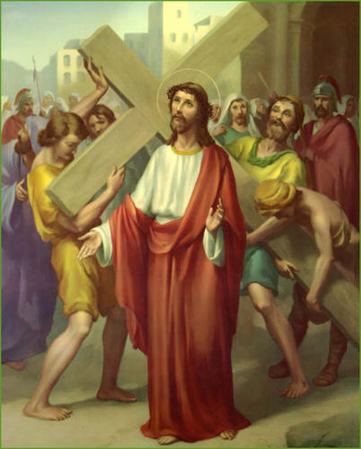
V: We adore You, O Christ, and we praise You. (Genuflect)
R: Because, by Your holy cross, You have redeemed the world. (Rise)
V: Consider Jesus as He walked this road with the cross on His shoulders, thinking of us, and offering to His Father in our behalf, the death He was about to suffer. (Kneel)
R: My most beloved Jesus,/ I embrace all the sufferings You have destined for me until death./ I beg You, by all You suffered in carrying Your cross,/ to help me carry mine with Your perfect peace and resignation./ I love You, Jesus, my love;/ I repent of ever having offended You./ Never let me separate myself from You again./ Grant that I may love You always; and then do with me as You will.
(Our Father, Hail Mary, Glory be.)
O, how sad and sore distressed,
Was that Mother highly blessed,
Of the sole Begotten One.
III
The Third Station: Jesus Falls the First Time
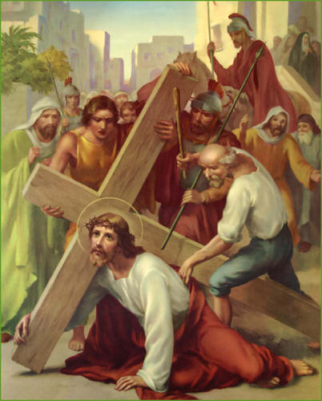
R: Because, by Your holy cross, You have redeemed the world. (Rise)
V: Consider the first fall of Jesus. Loss of blood from the scourging and crowing with thorns had so weakened Him that He could hardly walk; and yet He had to carry that great load upon His shoulders. As the soldiers struck Him cruelly, He fell several times under the heavy cross. (Kneel)
R: My beloved Jesus,/ it was not the weight of the cross, but the weight of my sins which made You suffer so much./ By the merits of this first fall, save me from falling into mortal sin./ I love You, O my Jesus, with all my heart;/ I am sorry that I have offended You./ May I never offend You again./ Grant that I may love You always; and then do with me as You will.
(Our Father, Hail Mary, Glory be.)
Christ above in torment hangs,
She beneath beholds the pangs,
Of her dying, glorious Son.
IV
The Fourth Station: Jesus Meets His Afflicted Mother
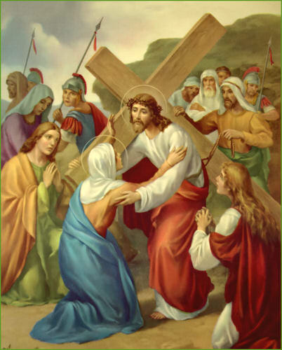
R: Because, by Your holy cross, You have redeemed the world. (Rise)
V: Consider how the Son met his Mother on His way to Calvary. Jesus and Mary gazed at each other and their looks became as so many arrows to wound those hearts which loved each other so tenderly. (Kneel)
R: My most loving Jesus, /by the pain You suffered in this meeting, / grant me the grace of being truly devoted to Your most holy Mother. / And You, my Queen, who was overwhelmed with sorrow, / obtain for me by Your prayers, / a tender and a lasting remembrance of the passion of Your divine Son. / I love You, Jesus, my Love, above all things. / I repent of ever having offended You. / Never allow me to offend You again. / Grant that I may love You always; and then do with me as You will.
(Our Father, Hail Mary, Glory be.)
Is there one who would not weep,
‘whelmed in miseries so deep,
Christ’s dear Mother to behold.
V
The Fifth Station: Simon Helps Jesus Carry the Cross
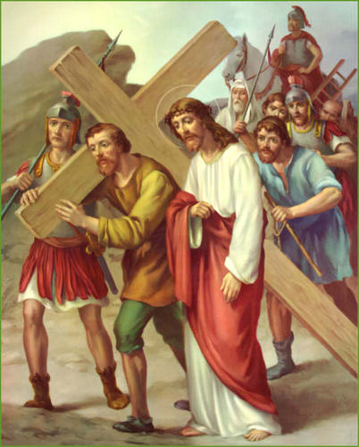 R: Because, by Your holy cross, You have redeemed the world. (Rise)
V: Consider how weak and weary Jesus was. At each step He was at the point of expiring. Fearing that He would die on the way when they wished Him to die the infamous death of the cross, they forced Simon of Cyrene to help carry the cross after Our Lord. (Kneel)
R: My beloved Jesus / I will not refuse the cross as Simon did: / I accept it and embrace it. / I accept in particular the death that is destined for me / with all the pains that may accompany it. / I unite it to Your death / and I offer it to You. / You have died for love of me; / I will die for love of You and to please You. / Help me by Your grace. / I love You, Jesus, my Love; / I repent of ever having offended You. / Never let me offend You again. / Grant that I may love You always; and then do with me as You will.
(Our Father, Hail Mary, Glory be.)
Can the human heart refrain,
From partaking in her pain,
In that Mother’s pain untold?
VI
The Sixth Station: Veronica Offers Her Veil to Jesus
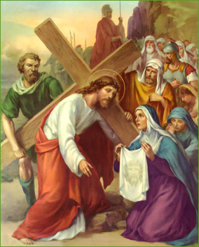 R: Because, by Your holy cross, You have redeemed the world. (Rise)
V: Consider the compassion of the holy woman, Veronica. Seeing Jesus in such distress, His face bathed in sweat and blood, she presented Him with her veil. Jesus wiped His face, and left upon the cloth the image of his sacred countenance. (Kneel)
R: My beloved Jesus, / Your face was beautiful before You began this journey; / but, now, it no longer appears beautiful / and is disfigured with wounds and blood. / Alas, my soul also was once beautiful / when it received Your grace in Baptism; / but I have since disfigured it with my sins. / You alone, my Redeemer, can restore it to its former beauty. / Do this by the merits of Your passion; and then do with me as You will.
(Our Father, Hail Mary, Glory be.)
Bruised, derided, cursed, defiled
She beheld her tender Child
All with bloody scourges rent.
VII
The Seventh Station: Jesus Falls the Second Time
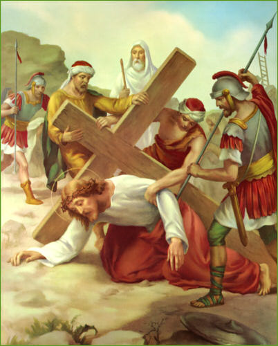R: Because, by Your holy cross, You have redeemed the world. (Rise)
V: Consider how the second fall of Jesus under His cross renews the pain in all the wounds of the head and members of our afflicted Lord. (Kneel)
R: My most gentle Jesus, / how many times You have forgiven me; / and how many times I have fallen again and begun again to offend You! / By the merits of this second fall, / give me the grace to persevere in Your love until death. / Grant, that in all my temptations, I may always have recourse to You. / I love You, Jesus, my Love with all my heart; / I am sorry that I have offended You. / Never let me offend You again. / Grant that I may love You always; and then do with me as You will.
(Our Father, Hail Mary, Glory be.)
For the sins of His own nation
Saw Him hang in desolation
Till His spirit forth He sent.
VIII
The Eighth Station: Jesus Speaks to the Women
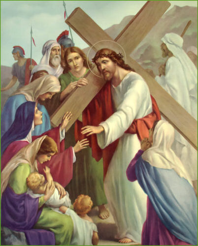R: Because, by Your holy cross, You have redeemed the world. (Rise)
V: Consider how the women wept with compassion seeing Jesus so distressed and dripping with blood as he walked along. Jesus said to them, “Weep not so much for me, but rather for Your children.” (Kneel)
R: My Jesus, laden with sorrows, / I weep for the sins which I have committed against You / because of the punishment I deserve for them; / and, still more, because of the displeasure they have caused You / who have loved me with an infinite love. / It is Your love, more than the fear of hell, / which makes me weep for my sins. / My Jesus, I love You more than myself; / I am sorry that I have offended You. / Never allow me to offend You again. / Grant that I may love You always; and then do with me as You will.
(Our Father, Hail Mary, Glory be.)
O sweet Mother! Fount of Love,
Touch my spirit from above
Make my heart with yours accord.
IX
The Ninth Station: Jesus Falls the Third Time
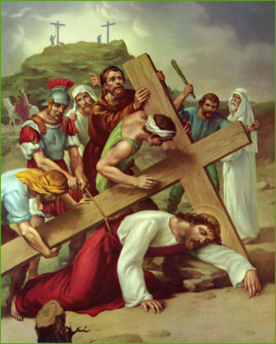
R: Because, by Your holy cross, You have redeemed the world. (Rise)
V: Consider how Jesus Christ fell for the third time. He was extremely weak and the cruelty of His executioners was excessive; they tried to hasten His steps though He hardly had strength to move. (Kneel)
R: My outraged Jesus, / by the weakness You suffered in going to Calvary, / give me enough strength to overcome all human respect / and all my evil passions which have led me to despise Your friendship. / I love You, Jesus my Love, with all my heart; / I am sorry for ever having offended You. / Never permit me to offend You again. / Grant that I may love You always; and then do with me as You will.
(Our Father, Hail Mary, Glory be.)
Make me feel as Thou have felt
Make my soul to glow and melt
With the love of Christ, my Lord.
X
The Tenth Station: Jesus Is Stripped of His Garments
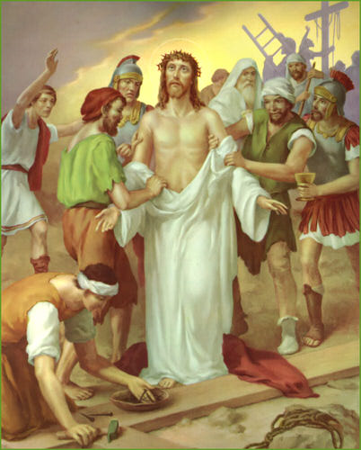
R: Because, by Your holy cross, You have redeemed the world. (Rise)
V: Consider how Jesus was violently stripped of His clothes by His executioners. The inner garments adhered to his lacerated flesh and the soldiers tore them off so roughly that the skin came with them. Have pity for your Savior so cruelly treated and tell Him: (Kneel)
R: My innocent Jesus, / by the torment You suffered in being stripped of Your garments, / help me to strip myself of all attachment for the things of earth / that I may place all my love in You who are so worthy of my love. / I love You, O Jesus, with all my heart; / I am sorry for ever having offended You. / Never let me offend You again. / Grant that I may love You always; and then do with me as You will.
(Our Father, Hail Mary, Glory be.)
Holy Mother, pierce me through
In my heart each wound renew
Of my Savior crucified.
XI
The Eleventh Station: Jesus Is Nailed to the Cross
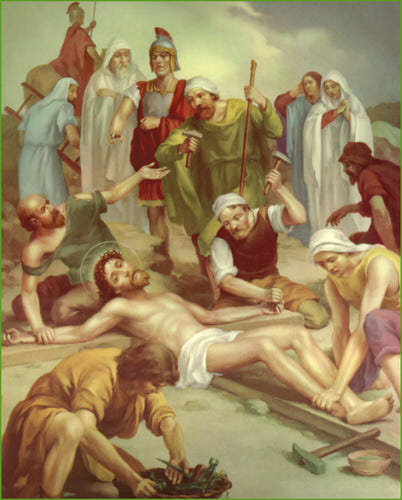
R: Because, by Your holy cross, You have redeemed the world. (Rise)
V: Consider Jesus, thrown down upon the cross, He stretched out His arms and offered to His eternal Father the sacrifice of His life for our salvation. They nailed His hands and feet, and then, raising the cross, left Him to die in anguish. (Kneel)
R: My despised Jesus, / nail my heart to the cross / that it may always remain there to love You and never leave You again. / I love You more than myself; / I am sorry for ever having offended You. / Never permit me to offend You again. / Grant that I may love You always; and then do with me as You will.
(Our Father, Hail Mary, Glory be.)
Let me share with you His pain,
Who for all our sins was slain,
Who for me in torments died.
XII
The Twelfth Station: Jesus Dies Upon the Cross
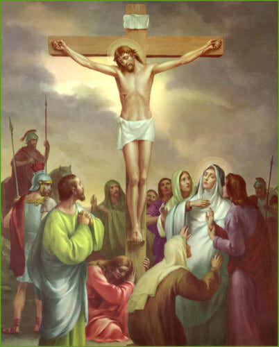
R: Because, by Your holy cross, You have redeemed the world. (Rise)
V: Consider how Your Jesus, after three hours of agony on the cross, is finally overwhelmed with suffering and, abandoning Himself to the weight of His body, bows His head and dies. (Kneel)
R: My dying Jesus, / I devoutly kiss the cross on which You would die for love of me. / I deserve, because of my sins, to die a terrible death; / but Your death is my hope. / By the merits of Your death, / give me the grace to die embracing Your feet and burning with love of You. / I yield my soul into Your hands. / I love You with my whole heart. / I am sorry that I have offended You. / Never let me offend You again. / Grant that I may love You always; and then do with me as You will.
(Our Father, Hail Mary, Glory be.)
Let me mingle tears with thee
Mourning Him who mourned for me,
All the days that I may live.
XIII
The Thirteenth Station: Jesus Is Taken Down from the Cross
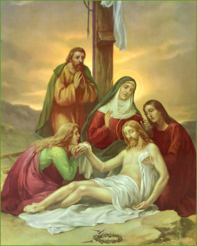
R: Because, by Your holy cross, You have redeemed the world. (Rise)
V: Consider how, after Our Lord had died, He was taken down from the cross by two of His disciples, Joseph and Nicodemus, and placed in the arms of His afflicted Mother. She received Him with unutterable tenderness and pressed Him close to her bosom. (Kneel)
R: O Mother of Sorrows, / for the love of Your Son, / accept me as Your servant and pray to Him for me, / And You, my Redeemer, since you have died for me, / allow me to love You, / for I desire only You and nothing more. / I love You, Jesus my Love, / and I am sorry that I have offended You. / Never let me offend You again. / Grant that I may love You always; and then do with me as You will.
(Our Father, Hail Mary, Glory be.)
By the cross with you to stay
There with you to weep and pray
Is all I ask of you to give.
XIV
The Fourteenth Station: Jesus Is Placed in the Sepulcher
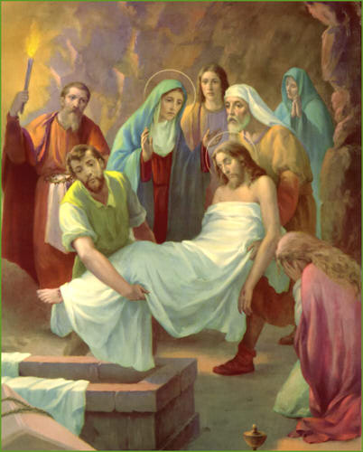
R: Because, by Your holy cross, You have redeemed the world. (Rise)
V: Consider how the disciples carried the body of Jesus to its burial, while His holy Mother went with them and arranged it in the sepulcher with her own hands. They then closed the tomb and all departed. (Kneel)
R: Oh, my buried Jesus, / I kiss the stone that closes You in. / But You gloriously did rise again on the third day. / I beg You by Your resurrection that I may be raised gloriously on the last day, / to be united with You in heaven, to praise You and love You forever. / I love You, Jesus, and I repent of ever having offended You. / Grant that I may love You always; and then do with me as You will.
(Our Father, Hail Mary, Glory be.)
Virgin of all virgins blest!
Listen to my fond request:
Let me share your grief divine.
Prayer to Jesus Christ Crucified:
My good and dear Jesus,I kneel before You,
asking You most earnestly
to engrave upon my heart
a deep and lively faith, hope, and charity,
with true repentance for my sins,
and a firm resolve to make amends.
As I reflect upon Your five wounds,
and dwell upon them
with deep compassion and grief,
I recall, good Jesus,
the words the Prophet David spoke
long ago concerning Yourself:
"They pierced My hands and My feet;
they have numbered all My bones."